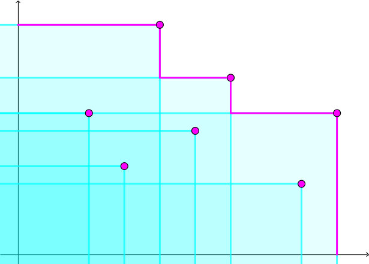

给定两个长度为 $n$ 的 $\texttt 0/\texttt 1$ 串 $A, B$，你可以以任意顺序对 $A$ 执行如下三种操作任意次：
将 $A$ 循环左移一位。形式化地，设 $A = A_1 A_2 A_3 \cdots A_n$，则令 $A \gets A_2 A_3 \cdots A_n A_1$。
将 $A$ 循环右移一位。形式化地，设 $A = A_1 A_2 \cdots A_{n-1} A_n$，则令 $A \gets A_n A_1 A_2 \cdots A_{n-1}$。
选择任意一个满足 $B_i = 1$ 的 $i$，令 $A_i \gets 1 - A_i$。
你的目标是通过改变 $A$ 使 $A$ 等于 $B$。
求最少要执行多少次操作，或者说明无法完成目标。
第一行包含一个长度为 $n$ 的 $\texttt 0/\texttt 1$ 串 $A$，表示初始字符串。
第一行包含一个长度为 $n$ 的 $\texttt 0/\texttt 1$ 串 $B$，表示目标字符串。
保证 $1 \leq n \leq 2000$。
输出一行一个整数，表示所需执行的操作的最小可能值。如果无法完成目标，则输出 $-1$。
首先考虑无解的情形。
不难发现，当 $B = \texttt 0^n$ 时，操作 3. 无法进行，从而只有初始时满足 $A = B$ 时答案为 $0$，否则一定无解。
而当 $B \neq \texttt 0^n$ 时，说明 $B$ 中存在 $\texttt 1$，此时一定有解 —— 一个暴力的解就是逐位更改，如果更改不了则先左移，再更改，最后右移回去。
不过，如何求步数的最小值呢？
首先，我们来定量地刻画整个过程，记初始记录一个变量 $0$，每次左移一位，则令该变量 $-1$，每次右移一位，令该变量 $+ 1$，设最终得到的结果为 $f$。
显然最终有 $- 2 n \leq f \leq 2 n$，否则这个解一定不是最优解。
考虑该变量变化的整个过程，可以发现，每个数只有第一次出现是有效的 —— 后面的改变均可以在它第一次到达这个位置时完成。
于是，对于一个数 $i$，它至多被出现两遍，如果出现两遍，一定是在返回的路上。
那么，和这道题类似，我们只需考虑每个数的首次出现，从而有如下性质：
不妨设 $f \geq 0$，出现的数中最小者的绝对值为 $l$ ($l \geq 0$)，最大者为 $r$ ($r \geq f$)，那么最终的序列一定如下：
$$ \left[ 0, -1, -2, \cdots, -l + 1, -l, -l + 1, \cdots, -1, 0, 1, 2, \cdots, f - 1, f, f + 1, \cdots, r - 1, r, r - 1, \cdots f + 1, f \right] $$
不难发现，它的长度 (长度减去 $1$，即段数) 等于 $2 \left( l + r \right) - f$。
我们现在枚举 $f$，于是就知道了最终 $A$ 和 $B$ 的对应关系，从而就能求出哪些位置需要进行修改，从而操作 3 的次数 (下面记作 $c$) 是固定的。(因为不可能对相同的位置进行修改，否则会浪费两次操作 3)
而 $f$ 又是枚举的，因此我们只需要求出 $l + r$ 的最小值，从而就能得到这个 $f$ 的答案 ($2 \left( l + r \right) - f + c$)，最终对所有 $f \in \left[ -2 n, 2 n \right]$ 求 $\min$ 即可。
那我们来看看 $l, r$ 需要满足什么限制。
考虑一个需要进行修改的位置，设它离左右两侧最近的 $b_i = 1$ 的位置的距离分别为 $l_p, r_p$，则需要满足条件 $l \geq l_p \vee r \geq r_p$。
从而，问题转化为如下：
有若干对 $\left( l_p, r_p \right)$，你需要满足 $l \geq l_p \vee r \geq r_p$，求 $\min \left( l + r \right)$。
我们考虑将 $\left( l_p, r_p \right)$ 看成坐标平面上的点。同时，由于 $\vee$ 不是很好处理，于是补集转化，考虑 $l < l_p \wedge r < r_p$ 的集合，不难发现它是一个 (无限) 矩形区域。
由 De Morgan 定律知，现在需要求它的并集，于是变成若干个矩形并，如下图：
不难发现，只有在右上单调集中的点才能对最终的矩形并上方的粉色折线产生实质性贡献，因此只需要统计出所有 $\left( l_p, r_p \right)$ 的单调集，最后对折线上面的点取 $\min$ 就可以啦。
至于如何计算单调集，可以使用排序或单调栈。当然，不要忘记 $r \geq f$ 的限制，而这也可以看成一个横坐标为 $+ \infty$，纵坐标为 $f$ 的点。
对于 $l_p, r_p$，可以通过预处理对于 $b$ 的每个位置，它离左右两侧最近的 $1$ 的距离，然后在枚举修改的位置后直接记录点即可。
时间复杂度 $O \left( n^2 \log n \right)$ 或 $O \left( n^2 \right)$，具体取决于排序方式。
#include <bits/stdc++.h>
typedef std::pair <int, int> pr;
const int N = 4054;
int n;
char A[N], B[N];
int l[N], r[N];
pr pts[N];
inline void down(int &x, const int y) {x > y ? x = y : 0;}
inline int min(const int x, const int y) {return x < y ? x : y;}
int solve() {
int i, j, offset, cnt, ret = INT_MAX, cur;
char *Bp = B;
for (i = 1; i < 2 * n; ++i) l[i] = (B[i] & 1 ? 0 : l[i - 1] + 1);
memcpy(l, l + n, n << 2);
for (i = 2 * n - 1; i >= 0; --i) r[i] = (B[i] & 1 ? 0 : r[i + 1] + 1);
for (offset = 0; offset < n; ++offset, ++Bp) {
for (cnt = i = 0; i < n; ++i)
if (A[i] != Bp[i]) pts[cnt++] = pr(l[i], r[i]);
sort(pts, pts + cnt, std::greater <pr> ());
j = offset, cur = INT_MAX;
for (i = 0; i < cnt; ++i)
if (pts[i].second > j)
down(cur, pts[i].first + j), j = pts[i].second;
down(cur, j), down(ret, cur * 2 - offset + cnt);
}
return ret;
}
int main() {
int ans1, ans2;
scanf("%s%s", A, B), n = strlen(A), memcpy(B + n, B, n);
if (!std::count(B, B + n, '1')) return puts(std::count(A, A + n, '1') ? "-1" : "0"), 0;
ans1 = solve(), std::reverse(A, A + n), std::reverse(B, B + 2 * n);
ans2 = solve(), printf("%d\n", min(ans1, ans2));
return 0;
}
坑1：最终的式子为 $2 \left( l + r \right) - f + c$，不要写错了。
坑2：还是之前说过的问题，构造单调集的时候注意第二关键字。